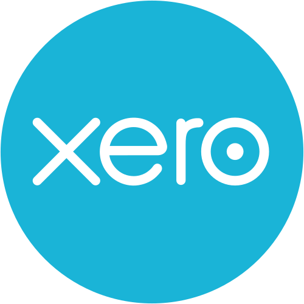
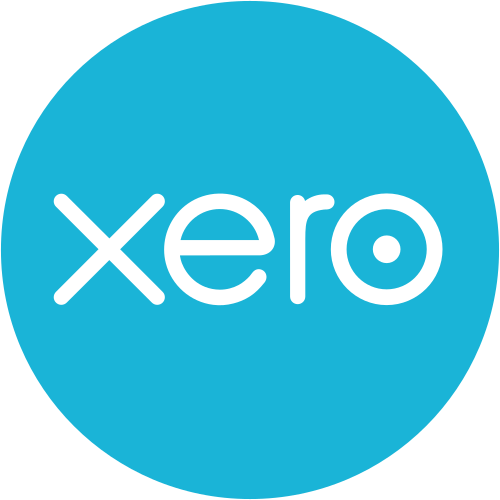

What is KPOLYTICS?
KPOLYTICS stands for Knowledge Process + Analytics. We’re not just an outsourcing firm—we’re a strategic extension of your CPA practice.
Our model blends deep domain expertise with forensic-level financial diagnostics, enabling firms to scale with precision, not compromise.
- 📊 Real-time financial reporting aligned with US GAAP and IRS workflows
- 📠Valuation benchmarking and forensic analysis for high-trust CPA engagements
- 🤠Partnership-first execution — we co-strategize, not just support
- 🔒 Secure, audit-ready processes built for IRS workflows and GDPR alignment
- 📈 Scalable delivery tailored for solo CPAs and multi-office firms
Our Core Deliverables Include
- 🧾 Bank Reconciliation — clean, timely, and audit-ready
- 🗂️ Transaction Categorization — accurate mapping for tax and reporting
- 📥 Catch-up & Cleanup Work — for backlogged books or messy transitions
- 🧮 Monthly Close Support — controller-level oversight and variance analysis
- 🧠Custom Reporting Dashboards — tailored insights for firm partners and clients
- 🔄 Workflow Automation — streamlined processes using QBO, Xero, AppFolio, and more
Whether you're a solo CPA or a multi-office firm, KPOLYTICS helps you unlock scale, reduce overhead, and maintain full control over your client experience.
Our name reflects our commitment to:
- Clarity in communication and reporting
- Compliance across every touchpoint
- Conversion-ready delivery that builds trust with your clients
Our Services
Accounting & Bookkeeping
Clean, accurate books and reconciliations tailored for CPA workflows.
Controller Services
Real-time financial oversight and reporting for CPA firms.
Tax Prep & Filing
Accurate, compliant, and deadline-driven tax support.
Forensic Analysis
Deep-dive financial diagnostics and valuation benchmarking.
Compliance & Security
Data protection and regulatory alignment for peace of mind.
Software We Support
We seamlessly integrate with leading accounting and property management platforms to ensure smooth workflows, accurate reporting, and scalable operations.


 



Why Choose Us?
At KPOLYTICS, we don’t just offer outsourced bookkeeping—we become a strategic extension of your CPA practice.
Our model is built for firms that value precision, control, and partnership.
Strategic Advantage
- 🧠Controller-Level Oversight — We go beyond task execution, offering variance analysis and monthly close support.
- 🤠CPA-First Onboarding — Every engagement begins with a co-strategy session to align on workflows, reporting, and client experience.
- 📠US-Centric Processes — Our workflows mirror IRS and GAAP expectations, not generic offshore templates.
- 🧾 Transparent Pricing — No hourly billing. No hidden fees. Just clean deliverables and predictable costs.
Operational Excellence
- 🔒 Secure Delivery Protocols — GDPR-aligned and audit-ready, built for sensitive financial data.
- 📈 Scalable Execution — Whether you're a solo CPA or managing multiple offices, our model adapts to your growth.
- ğŸ› ï¸ Software Flexibility — Seamless integration with QBO, Xero, AppFolio, Sage, and more.
- 📊 Custom Dashboards — Tailored insights for firm partners and clients, delivered in real time.
We help CPA firms unlock scale without compromising control—built for trust, powered by analytics.
Get in Touch
You can also reach us directly at info@kpolytics.com
Schedule a 30-Minute Call
Let’s discuss how KPOLYTICS can support your CPA firm with forensic-grade outsourcing and analytics.
Open Scheduler